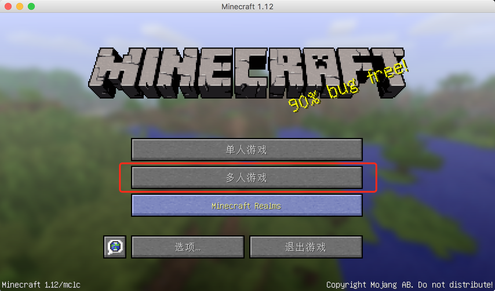
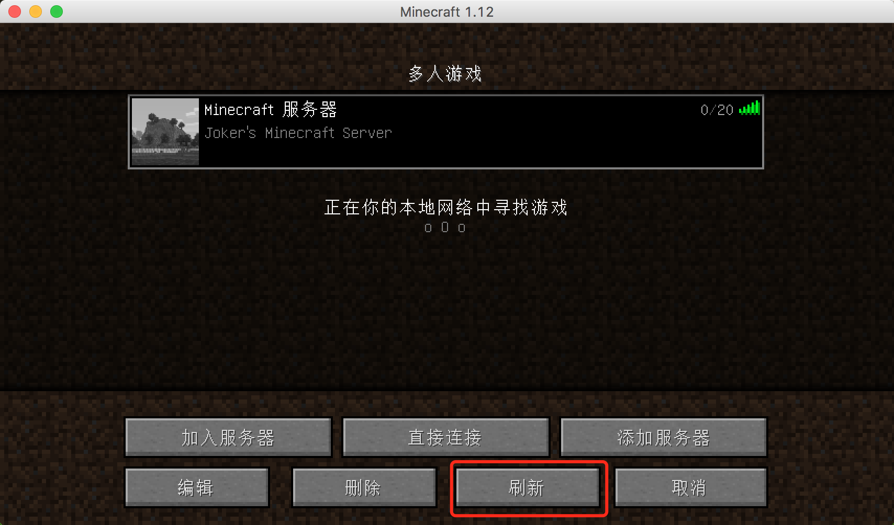
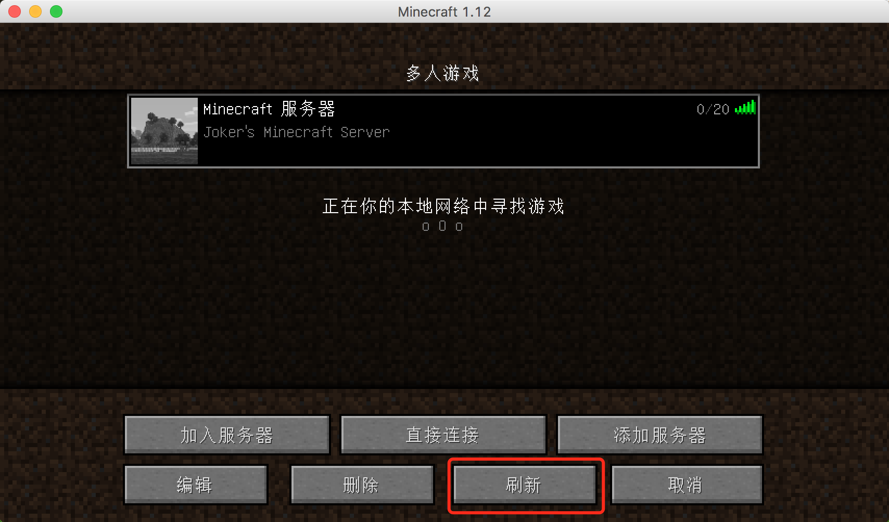

Minecraft 最新版(1.12) 自建体验

《Minecraft》是一款风靡全球的高自由度沙盒游戏，由瑞典Mojang AB和4J Studios开发，于2009年5月13日发行。2014年11月6日，该游戏被微软收购。2016年网易取得了该游戏在中国的代理权。
该作以每一个玩家在三维空间中自由地创造和破坏不同种类的方块为主题。玩家在游戏中可以在单人或多人模式中通过摧毁或创造方块以创造精妙绝伦的建筑物和艺术，或者收集物品探索地图以完成游戏的主线。
Minecraft 1.12 客户端下载
启动侠 精简版
体验指导
-
下载并解压客户端(Unix/Linux 需要安装Wine来支持exe程序运行)，如果对应版本的游戏没有下载，请选择
版本下拉框，按提示下载对应版本的客户端文件
-
取一个名字，然后
启动游戏(如果没有Java运行环境，启动过程中会自动下载) -
选择
多人游戏 | 添加服务器
 
添加服务器后如果红叉提示，多点几次
刷新按钮
-
选择服务器后，点击
加入服务器即可体验
Minecraft 1.12 体验服务器
- 纯净版，无Mod添加
- 承载上限: 20人
- 模式：生存模式
- 无身份认证(个人维护)
- 服务器地址: zhulongyixian.vicp.cc:25566
如果服务器连不上，可能是因为没有开启，如果有兴趣想玩的，可以联系管理员开启，联系方式在下边。
游戏攻略说明&官网
管理员联系方式
- 邮箱: 824219521@qq.com
-
微信:
w_z_z_1991